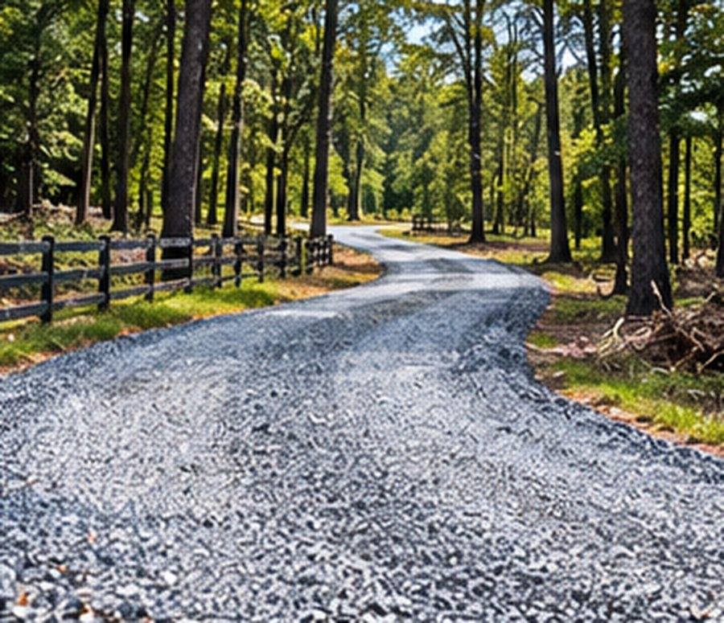

Residential Driveways
Gravel and dirt driveways built or rebuilt from the base up, graded to shed water and hold up to daily traffic.
Our Services
Gravel driveways and private roads built and rebuilt from the base up — graded, compacted and crowned to shed water instead of holding it. Family owned and operated since 1967.
Private Road & Driveway Construction
A driveway or private road is only as good as what’s underneath it. Jerry Cheshire Land Clearing Services builds and rebuilds gravel driveways and private roads across Southeast Georgia — graded, compacted and crowned to shed water instead of holding it.
With over 50 years of experience on local soil and terrain, and a well-maintained fleet that keeps downtime to a minimum, we handle everything from a short residential driveway to a private road reaching back to a remote homesite or farm.

What We Build
From a short residential driveway to a private road reaching back to a remote homesite, we bring the right equipment and decades of know-how to build it right the first time.
Gravel and dirt driveways built or rebuilt from the base up, graded to shed water and hold up to daily traffic.
Long private roads to remote homesites, farms and job sites — built to handle heavy equipment and everyday use.
A properly compacted sub-base so your road or driveway doesn’t rut, shift or wash out under load.
Culverts and crossings installed so water moves under your road instead of washing it out.
Room to turn around or park — graded and built to the same standard as the road itself.
Potholed, rutted or washed-out roads and driveways regraded and resurfaced so the problem doesn’t come back.
How It Works
Tell us about your property and project. We provide a free, no-obligation estimate based on your land, access and the scope of work.
We walk the property with you to plan the road or driveway’s path, grade and drainage before any work begins.
Our crew clears, grades and compacts the base, then adds and shapes the road surface for long-term durability.
Your driveway or private road is graded, compacted and ready for daily use.
Questions
A driveway typically connects your home to the public road; a private road can run much farther — to a remote homesite, farm or multiple properties — and usually needs a wider, more durable base to handle heavier and more frequent traffic.
Every property is different, so we provide a free, no-obligation estimate based on your land, access and the scope of work before anything begins.
Yes. We’ve been fully licensed and bonded since 1967, with the equipment and experience to adapt to nearly any site — all at affordable, transparent rates.
We’re based in Waynesville, GA and serve Brunswick, Waycross, Jessup, Baxley, Darien, Kingsland, Nahunta, Woodbine, Atkinson, Waverly, Lulaton, Hickox and the surrounding Southeast Georgia region.
Free Estimates
Tell us about your project and we’ll get back to you with a free, no-obligation quote — or give us a call and talk it through.